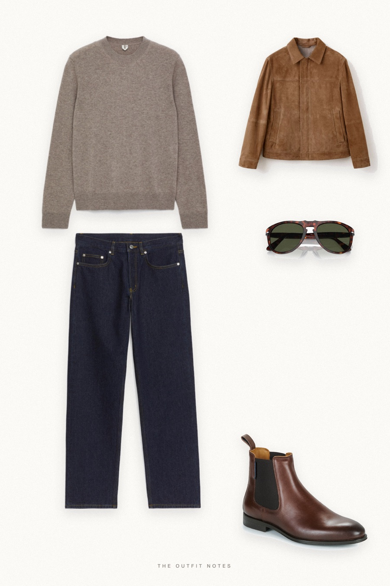

Downtown Cognac
suede jacket, cream knit, dark denim

A fall outfit for men in New York: Mango cognac suede jacket over an ARKET pure cashmere jumper in cream, ARKET OCEAN dark indigo loose straight jeans and Pellet Alfonse chestnut Chelsea boots. Persol 649 sunglasses add the finishing touch. Easy smart casual men's style with rich autumn tones.
The pieces
This page contains affiliate links: if you buy through them, we may earn a commission at no extra cost to you. Disclosure.
 Mango
Mango
Cognac suede jacket
Shop ARKET
ARKET
Beige cashmere crewneck
Shop ARKET
ARKET
Dark indigo straight jeans
Shop Pellet
Pellet
Chestnut chelsea boots
Shop Persol
Persol
Havana 649 sunglasses
Shop
Prices are indicative, taken when the look was published, and may have changed. Pictures of the outfit are AI-generated illustrations of real products; the product photos are the retailers' own.
Published 1 October 2026.